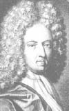

(1660 – 1731)

Yazarlık hayatı boyunca yüzlerce yazı ve pek çok kitap yayımlamış olmasına rağmen Daniel Defoe'nun modern roman sanatının öncülerinden biri kabul edilmesine yol açan asıl kitabı, 1719 yılında piyasaya çıkmış olan "Robinson Crusoe"dur. Pek az kişi bilir ki edebiyat tarihinin bu en ünlü ve önemli romanı piyasaya çıktığında üzerinde yazarının adı bile yazmıyordu ve yazar romanın ilk baskısından sadece 10 sterlin kazanmıştı!
Asıl adı Daniel Foe olan yazar Daniel Defoe (okunuşu: Danyel Defo) 1660 yılı yazında Alice ve James Foe'nun oğlu olarak dünyaya geldi. Babası bir tüccardı, dindar bir adamdı. Charles Morton Akademisi'ni bitiren Defoe, babasının din adamı olması yönündeki isteklerini ciddiye almayıp politikaya ve ticaret hayatına atılarak tüm Avrupa çapında uzun gezilere çıktı. Defoe ne yazık ki ticarette edebiyatta olduğu kadar iyi değildi ve girdiği hemen hemen tüm işleri batırdığı için hayatı boyunca borçlarla uğraşmak zorunda kaldı.
1684 yılında Mary Tuffley ile evlenen Defoe'nun iki oğlu ve beş kızı oldu. 1685 yılında Kral II. Charles'a karşı düzenlenen bir başkaldırıya karışan yazar, askerlerden kaçarken gizlendiği bir kilise bahçesinde soluk soluğa otururken birden yanındaki duvarda bir ismin kazınmış olduğunu gördü: Robinson Crusoe! Kimin yazdığını bilmediği bu adı beğenen yazar hemen bunu not aldı ve ileride yazacağı dünyaca ünlü romanının başkarakterine bu adı verdi!
1702 yılında Muhaliflerden Kurtulmanın En Kısa Yolu adlı yazısı yüzünden hapse atıldı ve oradan çıkabilmek için Oxford Kontu Robert Harley'nin casusu olarak çalışmayı kabul etmek zorunda kaldı. İktidar değişse de Defoe gazeteciliğe ve casusluğa devam etti. Yazdığı yazılar nedeniyle kendi zamanında güvenilmeyen ve sevilmeyen bir gazeteci olan Defoe, genellikle takma adlarla yazdığı yazılarında sürekli birilerine saldırdı ve bu nedenle pek çok düşman edindi.
Defoe'nun zamanında edebiyatın gerçek insanlar, gerçek durumlar üzerine olabileceği pek kabul gören bir düşünce değildi. O zamanın düşüncesine göre edebi eserler olağanüstü karakterlerin, hayali ülkelerde yaşadıkları olağanüstü olayları konu almalı ve bunları da olabildiğince abartarak anlatmalıydı. Oysa Daniel Defoe bunun değişmesi gerektiğini düşündü ve Nisan 1719'da sıradan bir denizcinin başına gelen bir gemi kazasından dolayı ıssız adaya düşmesini ve orada başından geçenleri anlatan bir roman yayımladı: Robinson Crusoe. Roman aslında ıssız bir adada dört yıl dört ay geçiren Alexander Selkirk adlı bir denizcinin gazetelerde anlattığı olaylardan hareket ediyordu, ama çok daha fazlasını anlatıyordu. Robinson Crusoe'nun ilk baskısı Londra'daki popüler yayıncılardan W. Taylor tarafından yapıldı ve ilk baskının üzerinde yazarın adı bile yazmıyordu! Romanın büyük ilgi görmesi üzerine aynı yılın sonunda Robinson Crusoe'nun Daha Sonraki Maceraları (1719) adlı ikinci kitap da piyasaya çıktı. On yıl sonra piyasaya çıkan Robinson Crusoe'nun Ciddi Düşünceleri (1729) adlı kitapsa diğerleri kadar ilgi görmedi.
Robinson Crusoe romanında, yazarın olayları birinci tekil kişinin ağzından anlatması ve adeta bir günce havasında vermesi romanda anlatılanların çok gerçekçi görünmesini sağlıyordu. Günümüz edebiyatında son derece sıradan bir teknik olan bu anlatım, o zamana kadar hiçbir yazar tarafından kullanılmamıştı ve roman gerçekçi anlatımı nedeniyle çok büyük ilgi gördü. O kadar ki sonraki yıllarda ıssız adalara düşmüş karakterlerin öykülerini anlatan romanlara tür olarak "Robinsonad" adı verildi. Robinson Crusoe sinema icat edilir edilmez filme çekilen ilk eserlerden biriydi ve o günden bu yana yüzlerce filme, resimli romana vs. konu oldu.
Defoe sonraki yıllarda da yazmaya devam etti. Altmış iki yaşındayken bir diğer ünlü romanı olan Moll Flanders (1722) piyasaya çıktı. Onu Veba Yılının Güncesi (1722) ve Albay Jack (1722) takip etti. Defoe'nun son önemli romanı Roxana ise 1724 yılında yayımlandı. 1720'lerden itibaren değişen hükümetle bir sorunu olmayan Defoe, muhalif yazılar yazmayı bırakarak tarihsel konulara yöneldi: Büyük Britanya Adası'nın Tamamında Bir Tur (3 cilt) (1724-27); Kölelik Konusu Hakkında (1724) ve İngiliz Tacirin Kitabı (1726).
Tarihin en ünlü romanı olan Robinson Cruose'nun yazarı Daniel Defoe, 27 Nisan 1731'de Moorfields'daki malikanesinde öldü. Yazarın hayatı boyunca broşür, gazete yazısı ve roman türlerinde dört yüzden fazla eser yazdığı bilinmektedir.
Seçme Yapıtları: Robinson Crusoe (YKY, 1997)